Connect to your cloud server with SSH for this exercise.
Horizontally scale a web application with nginx as a load balancer
The goal of this exercise is to show how a web application can be scaled to handle a growing amount of work, by running several instances of it with a systemd unit template, and configuring nginx as a load balancer in front of them.
This guide assumes that you have completed the previous
exercise: nginx is installed and running on your
server, and your wildcard DNS record points every name under your hostname
(*.jde.archidepN.ch in this guide) to it.
On this page
Table of contents
 Legend
Legend
Parts of this exercise are annotated with the following icons:
-
 A task you MUST perform to complete the exercise
A task you MUST perform to complete the exercise
-
 Optional step that you may perform to make sure that
everything is working correctly, or to set up additional tools that are not required but can
help you, or optional extra exercises to explore the topic further
Optional step that you may perform to make sure that
everything is working correctly, or to set up additional tools that are not required but can
help you, or optional extra exercises to explore the topic further
-
 Advanced tips on how to go further (or
challenges!)
Advanced tips on how to go further (or
challenges!)
 The end of the exercise
The end of the exercise-
 The architecture of the software you ran or
deployed during this exercise
The architecture of the software you ran or
deployed during this exercise
-
 Troubleshooting tips: how to fix common problems you might
encounter
Troubleshooting tips: how to fix common problems you might
encounter
Meet Brewscale
The application you will deploy is Brewscale, a café whose baristas take a while to brew each coffee. You order a drink, optionally with a name for the cup, and a barista brews it and hands it to you.
Each running instance of Brewscale is a barista: one process, which serves one customer at a time. Brewing a coffee takes about a second, and while it brews, the barista waits. Customers who arrive in the meantime wait in the queue.
You can visit the café at https://brewscale.archidep.ch before you deploy your own. Three baristas work there: reload the page a few times, and look at the number and the colour of the barista who serves you.
Requirements
Brewscale is written in Java, and built with Maven, a build tool for Java. Install both on your server:
$> sudo apt update
$> sudo apt install openjdk-25-jdk-headless mavenopenjdk-25-jdk-headless is the Java Development Kit (JDK), version 25: the
compiler that turns Java code into a program, and the Java virtual machine (JVM)
that runs that program. “Headless” means without the parts needed by graphical
applications, which a server does not have.
Check that both are installed:
$> java -version
openjdk version "25.0.5.0.3" 2026-10-24
OpenJDK Runtime Environment (build 25.0.5.0.3+1-1-26.04.1-Ubuntu)
OpenJDK 64-Bit Server VM (build 25.0.5.0.3+1-1-26.04.1-Ubuntu, mixed mode, sharing)
$> mvn -version
Apache Maven 3.9.12
Maven home: /usr/share/maven
Java version: 25.0.5.0.3, vendor: Ubuntu, runtime: /usr/lib/jvm/java-25-openjdk-amd64
...Your versions may be slightly different, but Java must be version 25.
Maven is Java’s package manager, much like npm for Node.js or Composer for PHP. It also builds the application, as you will see below.
Build the application
As you did for Guess It in the Git clone deployment,
create a directory for Brewscale in /srv, give it to yourself, and clone the
repository into it:
$> sudo mkdir /srv/brewscale
$> sudo chown jde:jde /srv/brewscale
$> git clone https://github.com/ArchiDep/brewscale.git /srv/brewscaleReplace jde with your username in the chown command.
Guess It is written in JavaScript, which Node.js runs as it is. Brewscale is written in Java, which must first be compiled: turned into bytecode, the instructions the JVM runs. This is the first deployment of this course with a build step, which turns the code of the repository into a program that can run.
Build it with Maven:
$> cd /srv/brewscale
$> mvn package
...
[INFO] Tests run: 95, Failures: 0, Errors: 0, Skipped: 0
...
[INFO] Building jar: /srv/brewscale/target/brewscale.jar
...
[INFO] BUILD SUCCESS
...The first build takes a while: Maven downloads the libraries Brewscale uses, and
the plugins it builds with, into your ~/.m2 directory. Later builds reuse
them.
Maven has compiled the code, run Brewscale’s automated tests, and packaged
everything into a single jar file (a java archive):
target/brewscale.jar. The jar is the program you will run. It contains
Brewscale’s compiled code and the libraries it uses, so the JVM needs nothing
else to run it.
Create a dedicated user
Like Guess It in the systemd exercise, Brewscale will run as a system user of its own, which can read its code but not modify it. Create it, give it the directory, and close the directory to every other user:
$> sudo useradd --system --shell /usr/sbin/nologin brewscale
$> sudo chown :brewscale /srv/brewscale
$> chmod 750 /srv/brewscale
$> ls -ld /srv/brewscale
drwxr-x--- 6 jde brewscale 4096 Nov 19 10:05 /srv/brewscaleYou still own the directory and everything in it, including the jar you have
built, so you will keep building Brewscale as yourself. The brewscale user can
read the jar, which is all it needs to run it.
Run a barista with systemd
Create a systemd unit file named /etc/systemd/system/brewscale.service with
sudo nano, to run Brewscale:
[Unit]
Description=Brewscale
[Service]
# Run the jar with the JVM.
ExecStart=/usr/bin/java -jar target/brewscale.jar
WorkingDirectory=/srv/brewscale
User=brewscale
# Listen on the loopback address and on a port of its own.
Environment="BREWSCALE_HOST=127.0.0.1"
Environment="BREWSCALE_PORT=4200"
# Limit the memory the JVM may use for the application's data.
Environment="JAVA_TOOL_OPTIONS=-Xmx64m"
Restart=on-failure
[Install]
WantedBy=multi-user.targetBrewscale reads its configuration from environment variables:
- It listens on port 3000 by default, which Guess It already uses, so
BREWSCALE_PORTgives it a port of its own. - It listens on every address of the server by default.
BREWSCALE_HOSTlimits it to127.0.0.1, the server’s loopback address: only programs running on the server itself can connect to it. nginx is the only client a barista needs, and it runs on the server.
This time, the variables are in the unit file, with the Environment option,
rather than in a file of their own in /etc read with EnvironmentFile as for
Guess It. Every user of the server can read unit files, but Brewscale has no
password or other secret in its configuration.
What is -Xmx64m for? The JVM keeps the data of the program it runs, its
objects, in an area of memory called the heap, which grows as the program
needs it. -Xmx is the JVM option that sets the maximum size of the heap, here
64 MiB.
Without it, the JVM picks a maximum of its own, a quarter of the memory of the machine it runs on: about 200 MiB on a server with less than 1 GiB of memory, such as yours. A barista needs far less. It uses about 30 MiB of memory when it has just started, and about 50 MiB after a few minutes of orders. But a JVM does not hurry to give memory back once it has used it, and you will soon run three baristas, next to Guess It, PostgreSQL and nginx. The limit makes sure that three baristas cannot, even in the worst case, take most of your server’s memory.
JAVA_TOOL_OPTIONS is an environment variable that every JVM reads when it
starts, and adds to the options of its command line.
Enable and start the service:
$> sudo systemctl enable brewscale
$> sudo systemctl start brewscaleCheck that it is running:
$> sudo systemctl status brewscale
● brewscale.service - Brewscale
Loaded: loaded (/etc/systemd/system/brewscale.service; enabled; preset: enabled)
Active: active (running) since Thu 2026-11-19 10:12:03 UTC; 3s ago
...
Nov 19 10:12:03 jde.archidep.ch systemd[1]: Started brewscale.service - Brewscale.
Nov 19 10:12:03 jde.archidep.ch java[10482]: Picked up JAVA_TOOL_OPTIONS: -Xmx64m
Nov 19 10:12:04 jde.archidep.ch java[10482]: The barista listening on 127.0.0.1:4200, brewing in 1sThe last line is printed by Brewscale itself. It says where the barista listens, and how long it takes to brew each drink.
Serve the café through nginx
Brewscale is an nginx site of its own, like the clock and Guess It: brewscale.
followed by your hostname, for example brewscale.jde.archidepN.ch.
Create the nginx configuration file /etc/nginx/sites-available/brewscale with
sudo nano:
server {
listen 80;
server_name brewscale.jde.archidepN.ch;
# Forward every request to Brewscale.
location / {
proxy_pass http://127.0.0.1:4200;
}
}Replace jde.archidepN.ch with your hostname in the server_name directive.
Enable it, then check and reload nginx’s configuration:
$> sudo ln -s /etc/nginx/sites-available/brewscale /etc/nginx/sites-enabled/brewscale
$> sudo nginx -t
nginx: the configuration file /etc/nginx/nginx.conf syntax is ok
nginx: configuration file /etc/nginx/nginx.conf test is successful
$> sudo systemctl reload nginx Order a coffee
Visit the café in your browser, e.g. http://brewscale.jde.archidepN.ch, and
order a drink, with your name for the cup if you like.
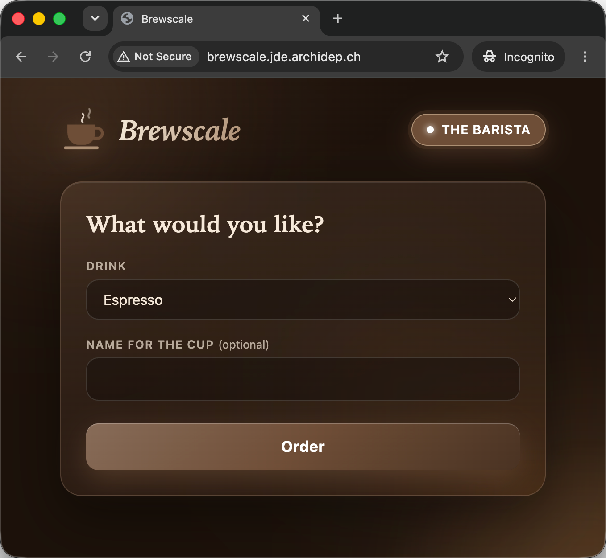
The button says “Brewing…” for about a second, then the barista hands you your drink, and tells you how long it took to brew and how long you waited. Every drink takes about the same time: that is how long brewing a coffee takes in this café.
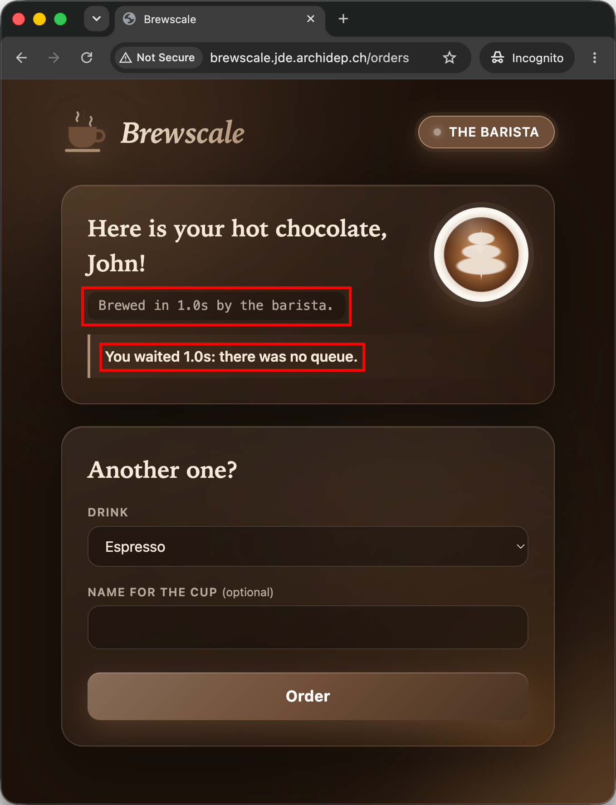
Look at the logs of the service: the barista has logged your order.
$> sudo journalctl -u brewscale -n 1
Nov 19 10:15:41 jde.archidep.ch java[10482]: The barista brewed a flat white for Alice in 1.001sIt takes a while to brew coffee, everyone knows it. The question is what happens when many customers come at once. As the saying goes:
- Don’t guess, measure!
Load test the café
You will use Locust, an open source load testing tool written in Python, to measure the performance of the café. Load testing is the process of putting demand on a system and measuring its response time and error rate. In this case, you will simulate customers ordering coffee at the same time, and see how long each of them waits for their drink.
Follow the instructions below when it comes to the number of users. You are going to simulate many users sending requests to your server at the same time. If you simulate too many users, you may bring down your server, or your test may easily be mistaken for a DoS attack by the Azure cloud. Your server may end up being blacklisted.
Run Locust with Docker Desktop
You will run Locust on your computer, not on your server. A load testing tool running on the server it tests uses that server’s CPU and memory to simulate its users, and makes the application look slower than it is.
Do this part of the exercise on your computer, not on your server: in a new terminal (in the WSL on Windows). Keep your other terminal connected to your server, you will need it again later.
You will use Docker Desktop to run Locust, as you did for PostgreSQL in the Guess It exercise. If you did not install Docker Desktop then, install it as that exercise explains. Make sure Docker Desktop is running.
On Windows, you must also check that Docker Desktop is integrated with the
WSL, otherwise the docker command is not available there. Open Docker
Desktop’s settings with the gear icon at the top, and find the WSL
integration section. Enable integration with my default WSL distro must be
on. If you had to turn it on, click Apply & Restart Engine, then open a new
WSL terminal:
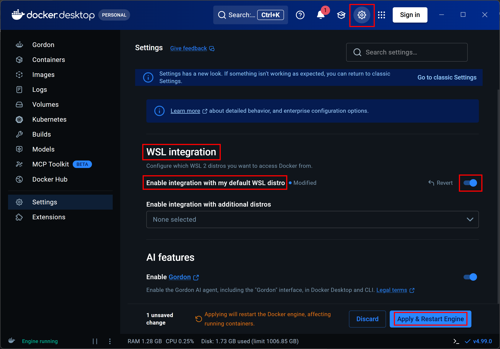
To use Locust, you would normally write a locustfile describing a
load testing scenario: the users, and what they do with your application.
Brewscale’s repository already has one, named
locustfile.py. Clone the repository on your computer to get it:
$> cd /path/to/projects
$> git clone https://github.com/ArchiDep/brewscale.git
$> cd brewscaleYou do not have to write anything: the file is already in your clone:
$> cat locustfile.pyThis is what you should see:
from locust import HttpUser, constant, task
class Customer(HttpUser):
wait_time = constant(1)
@task
def order_a_flat_white(self):
self.client.post("/orders", data={"drink": "flat-white"})Each user is a customer, who orders a flat white, waits one second once they have it, and orders again.
Still in the brewscale directory, run Locust in a container (the \ at the
end of a line continues the command on the next line):
$> docker run -d --rm --name locust \
-p 127.0.0.1:8089:8089 \
-v "$PWD:/home/locust:ro" \
locustio/locust:2.47.0
c1ffe65eb41b11a2235d5b5c90f6b26ccee00011097e65fe46424559603a22eelocustio/locust:2.47.0is Locust’s official image, at the version this exercise was written with. Docker downloads it the first time.-druns the container in the background: the command prints the container’s ID, and gives you your prompt back while Locust keeps running.--name locustnames the container, and--rmremoves it once it stops.-p 127.0.0.1:8089:8089forwards port 8089 of your computer to port 8089 of the container, where Locust’s web interface listens.127.0.0.1makes it reachable from your computer only, not from the other computers of your network.-v "$PWD:/home/locust:ro"makes the current directory, your clone, appear in the container as/home/locust, read-only (ro). That is the directory Locust runs in, where it looks forlocustfile.py.$PWDis a variable of your shell that holds the current directory.
Leave Locust running until the end of this exercise. Its container should be
among the running containers that docker ps lists:
$> docker ps
CONTAINER ID IMAGE COMMAND CREATED STATUS PORTS NAMES
924b4f80a521 locustio/locust:2.47.0 "locust" 18 seconds ago Up 17 seconds 127.0.0.1:8089->8089/tcp locustYou can also check that Locust has started by displaying what it has printed so far:
$> docker logs locust
... Starting Locust 2.47.0
... Starting web interface at http://0.0.0.0:8089, ...You should now be able to access Locust at http://localhost:8089.
Send one customer, then two
The Host field tells Locust where the application to test is. Enter the
address of your café, e.g. http://brewscale.jde.archidepN.ch. Set the Number
of users to 1 and the Ramp up to 1 for now, and start the test.
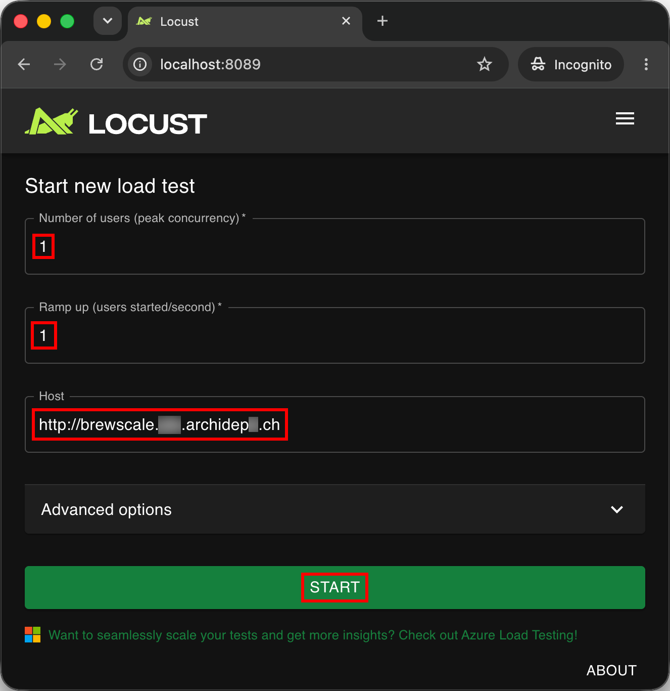
The Statistics tab shows the number of requests made, in total and per second, and how long they took. The Charts tab shows the same numbers as line charts.
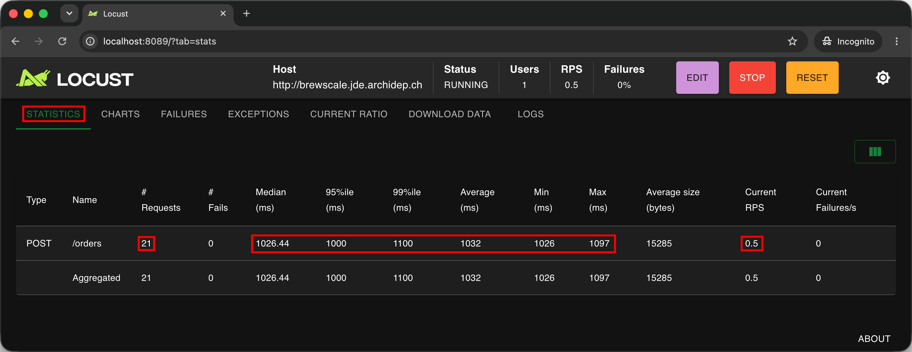
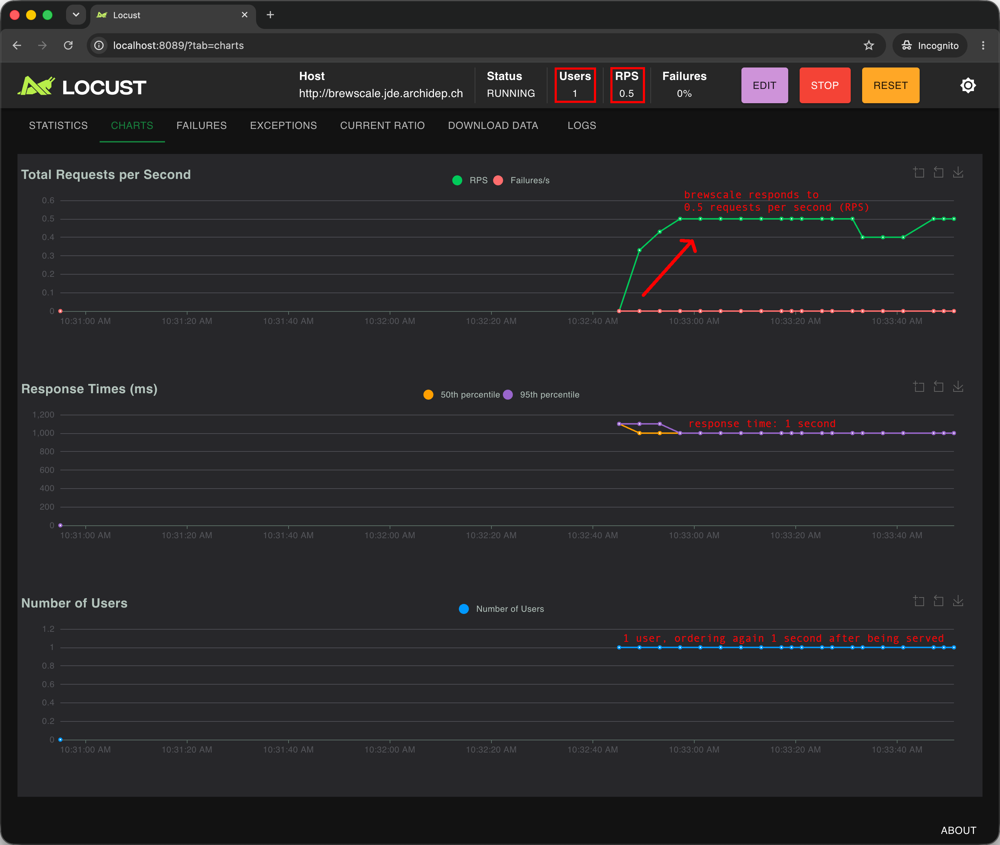
You should quickly see the number of requests per second (RPS) settle at about 0.5. This is what you would expect with one customer: the customer orders a flat white, which takes about one second to brew, as the response time chart shows. Then the customer waits one second, as the locustfile says, and orders again. One order every two seconds is 0.5 orders per second.
Click the Edit button in the top bar, and change the Number of users to 2, without changing the ramp up.
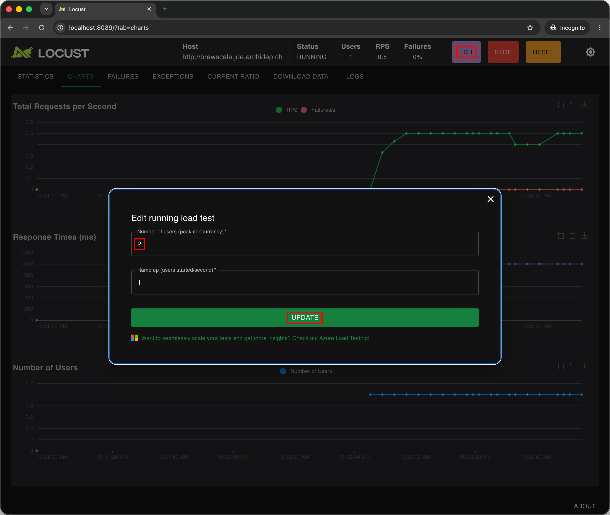
With two customers ordering every two seconds each, you should see the number of requests per second settle at about 1, with the same response time. Everything is as expected so far. But the barista is now brewing all the time: while one customer waits their second, the other’s coffee is brewing.
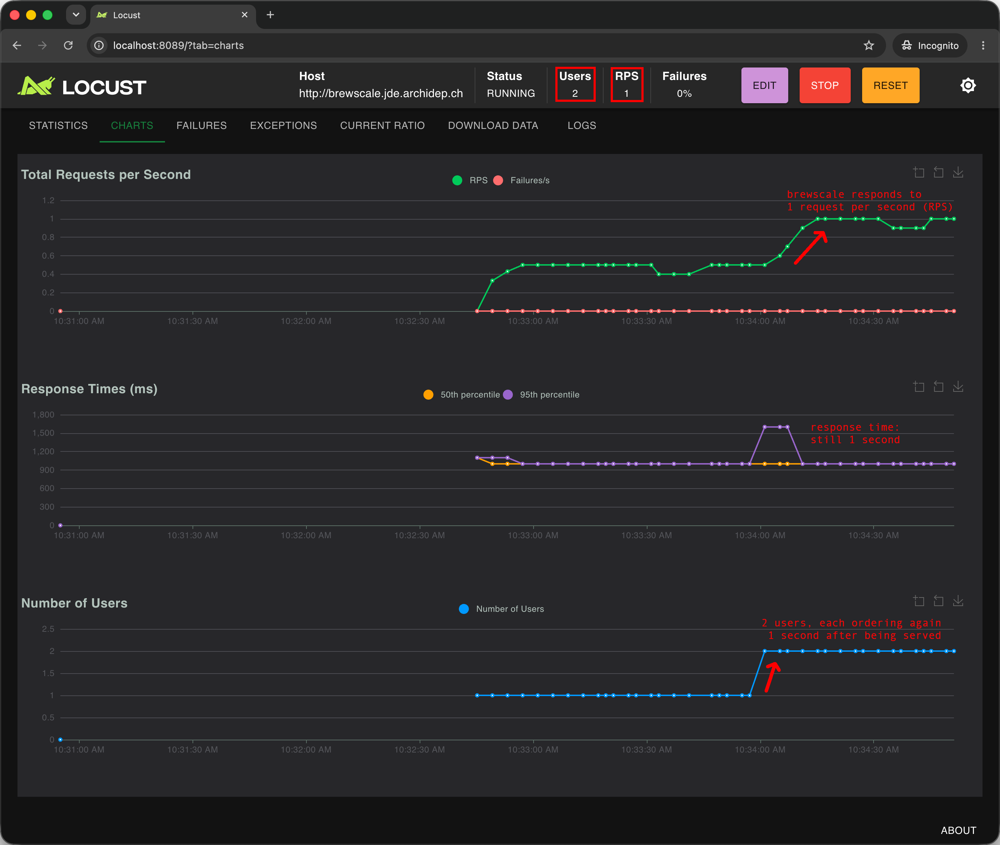
Send ten customers
Now change the Number of users to 10, and leave the Ramp up at 1. This adds 8 more customers to the 2 already there.
The Ramp up is the number of users added every second, so it takes 8 seconds to go from the 2 users you already have to 10.
The number of requests per second stays at about 1, while the average response time, in the Statistics tab, grows to about 9 seconds. Some customers wait much longer than that.
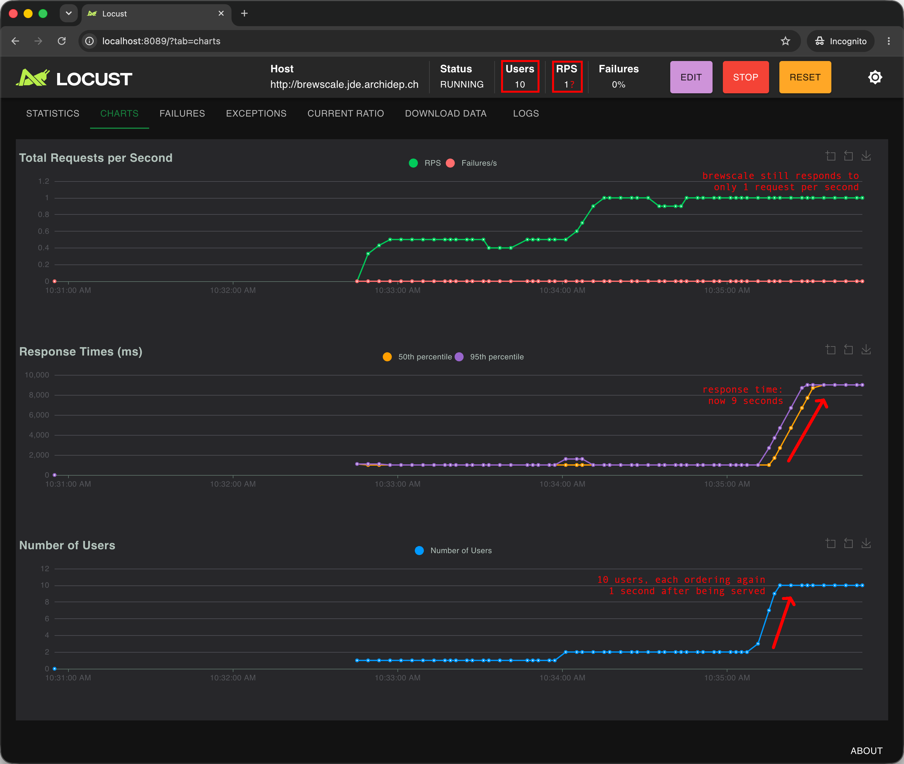
Join the queue
While the ten customers are still ordering, order a coffee yourself in your browser. Even loading the page with the order form takes about ten seconds, and then you have to wait as long again for your drink. When it comes, the page tells you how long it took to brew it, and how long you waited, something like: “Brewed in 1.0s by the barista. You waited 9.8s: the rest of the time, you were in the queue.”
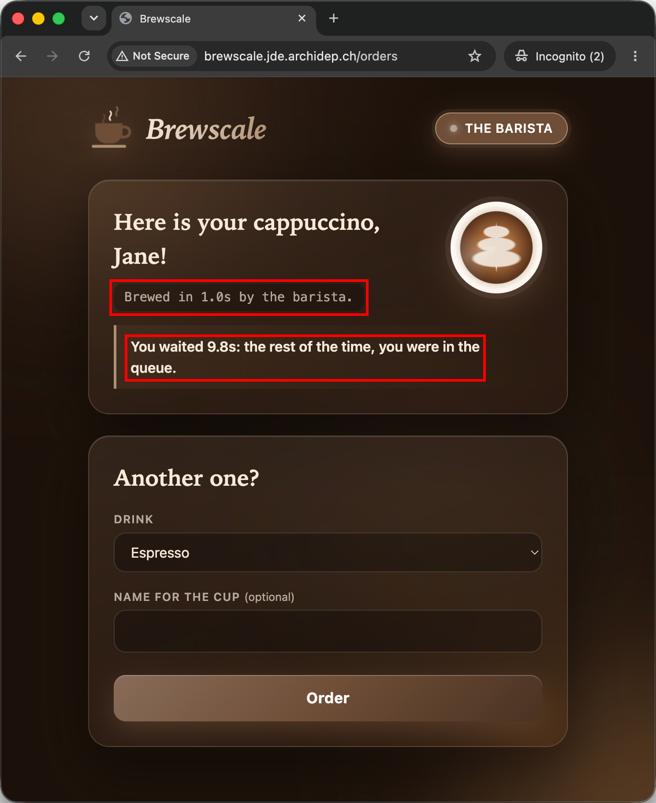
Your coffee took a second to brew. Why did you wait so much longer?
Your barista is one process, which serves one customer at a time. While it brews a coffee, the next customers wait for it to finish, in the queue. When it is done, it serves the next one, and the others keep waiting:
customer 1 --1s--
customer 2 --1s--
customer 3 --1s--
customer 4 --1s--
customer 5 --1s--
customer 6 --1s--
customer 7 --1s--
customer 8 --1s--
customer 9 --1s--
you --1s--
------------------------------------------------------------ 10sThe barista brews about one coffee per second, however many customers wait. That is why the number of requests per second stayed at about 1 with ten customers. The ten Locust customers spend most of their time in the queue, and so did you when you joined it: almost every second of your wait was the turn of another customer.
The barista does not only brew, it also hands out the menu: every request is served in turn, including the one for the page with the order form. That is why you had to queue twice, once just to see the menu, and once more for your drink.
The barista does not always serve customers in the order they arrived, so your own wait may have been shorter, or much longer. But on average, a customer who finds nine others waiting waits about nine seconds before their turn.
You may now stop the load test.
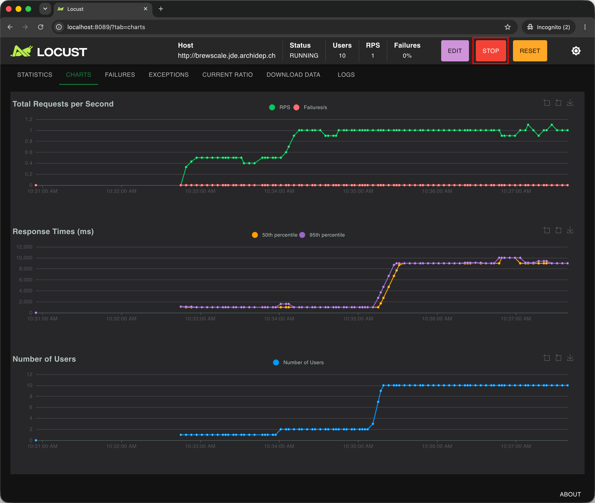
What to do?
Nobody wants to wait ten seconds for a coffee that takes one second to brew. How do you make the queue move faster?
In a café, you would hire more baristas. Two facts make that work here too:
- The baristas mostly wait. A barista brewing a coffee is a process waiting, which uses no CPU. As in two queues at one coffee machine, the processor is free to run something else in the meantime: other baristas.
- The server has room for more. A barista uses little CPU and memory, and your server has some to spare.
Brewing a coffee stands for what makes most web applications slow in real life: waiting for something outside the process, such as a database, a file on a disk, or another service on the internet. While it waits, the process uses no CPU, and it cannot serve anybody else.
If one barista cannot serve enough customers, and the server has room to spare, let’s hire more baristas: run more instances of Brewscale, and see what happens.
Hire more baristas
Go back to your terminal that is still connected to your server over SSH for the rest of the exercise, or reconnect if necessary.
First, stop and disable the brewscale service:
$> sudo systemctl stop brewscale
$> sudo systemctl disable brewscaleYour café is now closed. If you visit it, nginx answers with an error page: it still forwards your request, but no barista is there to answer it.
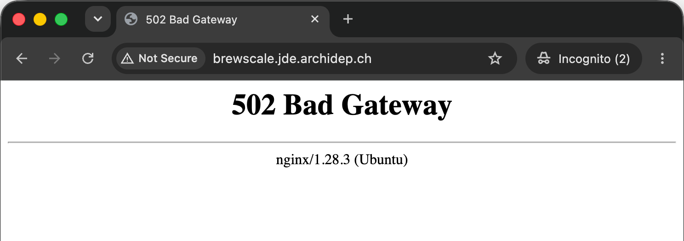
To run several instances of Brewscale, you could write a unit file for each, but systemd also supports unit templates: units that can be started several times from a single file.
Turn the unit file into a template
To turn the brewscale service into a template, rename the brewscale.service
file to brewscale@.service:
$> sudo mv /etc/systemd/system/brewscale.service /etc/systemd/system/brewscale@.serviceEach instance of a template is started with an instance name, which comes
after the @: brewscale@1, brewscale@2, and so on. In the template, %i
stands for that name. You will use it as the barista number.
Modify /etc/systemd/system/brewscale@.service as follows:
- Remove the
[Install]section and theWantedByoption it contains. You will no longer start the template directly, but a group of its instances. - Add a space and
%iat the end of the description, so that each instance has its own:Description=Brewscale %i. - Add a space and
%iat the end of theExecStartcommand, to give Brewscale its barista number as an argument. As Brewscale’s documentation says, the number changes the colour of the café, and is shown on every page and in every line of the logs. - Change the value of the
BREWSCALE_PORTenvironment variable from4200to420%i. Only one process can listen on a port, so each barista needs a port of its own. systemd replaces%iwith the instance name as text, not as a number: barista 1 listens on port 4201, barista 2 on port 4202, and so on. - Add a
PartOf=brewscale.targetoption to the[Unit]section. A systemd target is a group of units. Thebrewscale.targetgroup does not exist yet, but you will create it below.
Since %i is replaced as text, 420%i is a port number up to barista 99, which
listens on port 42099. Barista 100 would listen on port 420100, which does not
exist: ports go up to 65535.
The file should now look like this, with the lines that changed highlighted:
[Unit]
Description=Brewscale %i
PartOf=brewscale.target
[Service]
# Run the jar with the JVM, with the barista number as an argument.
ExecStart=/usr/bin/java -jar target/brewscale.jar %i
WorkingDirectory=/srv/brewscale
User=brewscale
# Listen on the loopback address and on a port of its own: 4201 for barista 1,
# 4202 for barista 2, and so on.
Environment="BREWSCALE_HOST=127.0.0.1"
Environment="BREWSCALE_PORT=420%i"
# Limit the memory the JVM may use for the application's data.
Environment="JAVA_TOOL_OPTIONS=-Xmx64m"
Restart=on-failure Group the baristas in a target
Create the target file /etc/systemd/system/brewscale.target:
[Unit]
Description=Brewscale café
Requires=brewscale@1.service
[Install]
WantedBy=multi-user.targetThe target runs one instance of the brewscale@ template, with the instance
name 1: a service named brewscale@1. PartOf in the template is the
other way round: stopping or restarting the target stops or restarts each of its
baristas with it.
Reload systemd’s configuration, then enable and start the target as you would a service:
$> sudo systemctl daemon-reload
$> sudo systemctl enable brewscale.target
$> sudo systemctl start brewscale.targetCheck the status of the target, then of its only barista:
$> sudo systemctl status brewscale.target
● brewscale.target - Brewscale café
Loaded: loaded (/etc/systemd/system/brewscale.target; enabled; preset: enabled)
Active: active since Thu 2026-11-19 10:31:12 UTC; 4s ago
...
Nov 19 10:31:12 jde.archidep.ch systemd[1]: Reached target brewscale.target - Brewscale café.
$> sudo systemctl status brewscale@1
● brewscale@1.service - Brewscale 1
Loaded: loaded (/etc/systemd/system/brewscale@.service; static)
Active: active (running) since Thu 2026-11-19 10:31:12 UTC; 12s ago
...
CGroup: /system.slice/system-brewscale.slice/brewscale@1.service
└─10601 /usr/bin/java -jar target/brewscale.jar 1
Nov 19 10:31:12 jde.archidep.ch systemd[1]: Started brewscale@1.service - Brewscale 1.
Nov 19 10:31:12 jde.archidep.ch java[10601]: Picked up JAVA_TOOL_OPTIONS: -Xmx64m
Nov 19 10:31:13 jde.archidep.ch java[10601]: Barista 1 listening on 127.0.0.1:4201, brewing in 1s Put the barista behind an nginx upstream
The barista now listens on port 4201, and nginx still forwards requests to port
4200, where nothing listens any more. Update the nginx configuration file
/etc/nginx/sites-available/brewscale to forward them to an
upstream: a named group of servers, the addresses where
nginx can reach your baristas. There is only one barista for now, but there will
be more soon.
Define the upstream, and change the proxy_pass directive to forward
requests to it:
# The baristas of the café.
upstream brewscale {
server 127.0.0.1:4201;
}
server {
listen 80;
server_name brewscale.jde.archidepN.ch;
location / {
# Forward every request to one of the baristas.
proxy_pass http://brewscale;
}
}brewscale in http://brewscale is the name of the upstream, not a domain
name: nginx does not look it up in the DNS.
Check and reload nginx’s configuration:
$> sudo nginx -t
$> sudo systemctl reload nginxVisit your café again. It has changed colour, and says that barista 1 serves you: the barista number you passed as an argument.
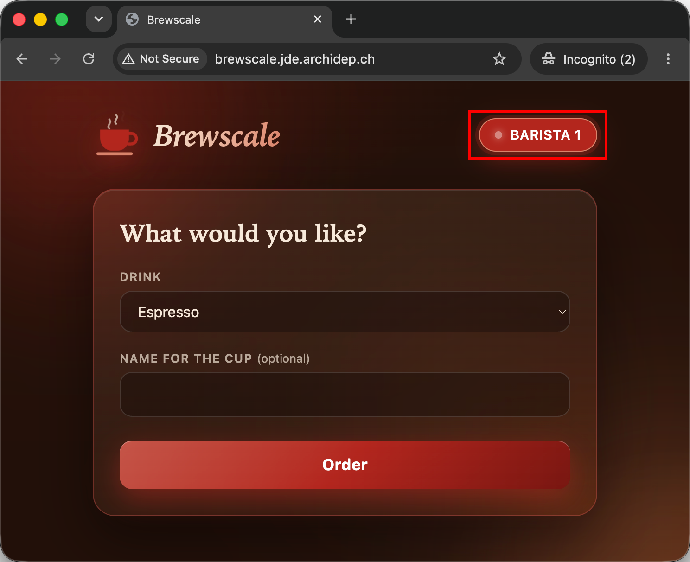
Load test a single barista again
Go back to Locust, at http://localhost:8089, and run the same test as before:
the Host
http://brewscale.jde.archidepN.ch, with the Number of users set to 10 and
the Ramp up set to 1.
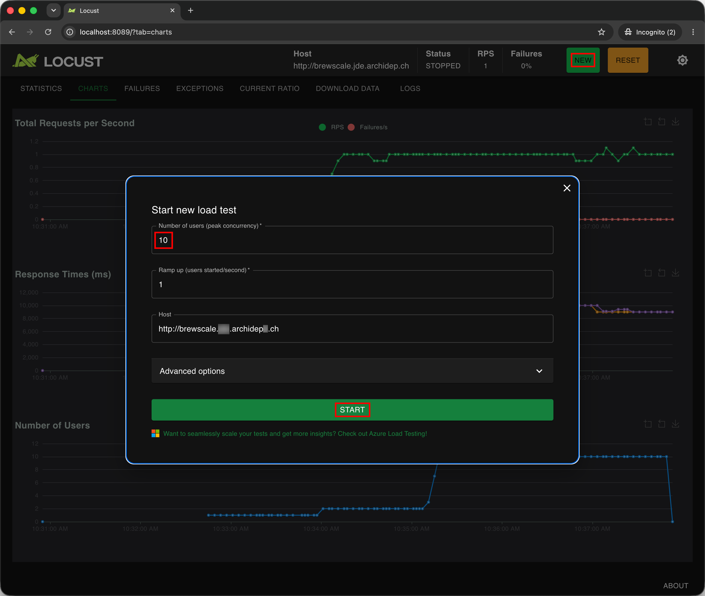
You should see the same numbers as before: about one request per second, and a response time of about 9 seconds. Nothing has really changed yet: there is still a single barista.
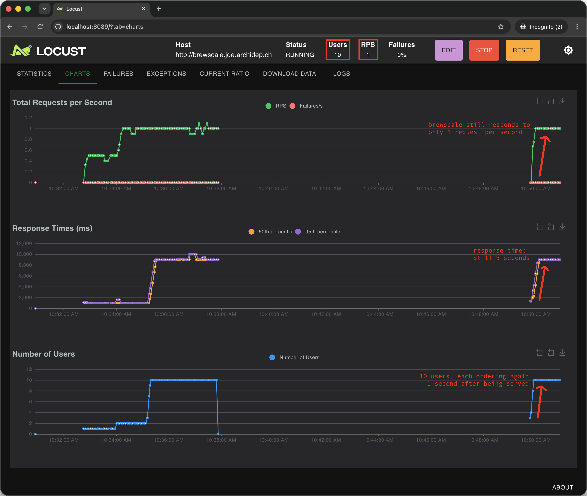
Hire two more baristas
To hire more baristas, change the Requires option of
/etc/systemd/system/brewscale.target to start more instances of the template.
Let’s run three:
[Unit]
Description=Brewscale café
Requires=brewscale@1.service brewscale@2.service brewscale@3.service
[Install]
WantedBy=multi-user.targetReload systemd’s configuration, and start the target again. There is no need to restart it: starting it starts whatever it requires that is not running yet.
$> sudo systemctl daemon-reload
$> sudo systemctl start brewscale.targetCheck the status of each barista:
$> sudo systemctl status brewscale@1
$> sudo systemctl status brewscale@2
$> sudo systemctl status brewscale@3The last line of each status is printed by the barista itself, and says on which
port it listens: 4201 for barista 1, 4202 for barista 2, and 4203 for
barista 3. These are the ports nginx must forward requests to.
Each barista is a process of its own, running the same jar with a different
number. List the processes of the brewscale user:
$> ps -f -u brewscale
UID PID PPID C STIME TTY TIME CMD
brewsca+ 10601 1 0 10:31 ? 00:00:03 /usr/bin/java -jar target/brewscale.jar 1
brewsca+ 10744 1 1 10:38 ? 00:00:01 /usr/bin/java -jar target/brewscale.jar 2
brewsca+ 10745 1 1 10:38 ? 00:00:01 /usr/bin/java -jar target/brewscale.jar 3ps cuts usernames longer than 8 characters, and marks the cut with a +.
The Locust charts do not change yet: nginx does not know about the new baristas.
Configure nginx to balance the load among the baristas
Add your new baristas to the upstream block of
/etc/nginx/sites-available/brewscale. Their barista numbers are 2 and 3,
so they listen on ports 4202 and 4203:
upstream brewscale {
server 127.0.0.1:4201;
server 127.0.0.1:4202;
server 127.0.0.1:4203;
}Check and reload nginx’s configuration:
$> sudo nginx -t
$> sudo systemctl reload nginxnginx is now a load balancer: it forwards each request to one of the servers of the upstream, taking them in turn.
Look at Locust again. You should quickly see the number of requests per second grow to about 3, and the response times fall. The 50th percentile, the time within which half of the orders are served, may fall to about a second, while the 95th percentile stays at several seconds.
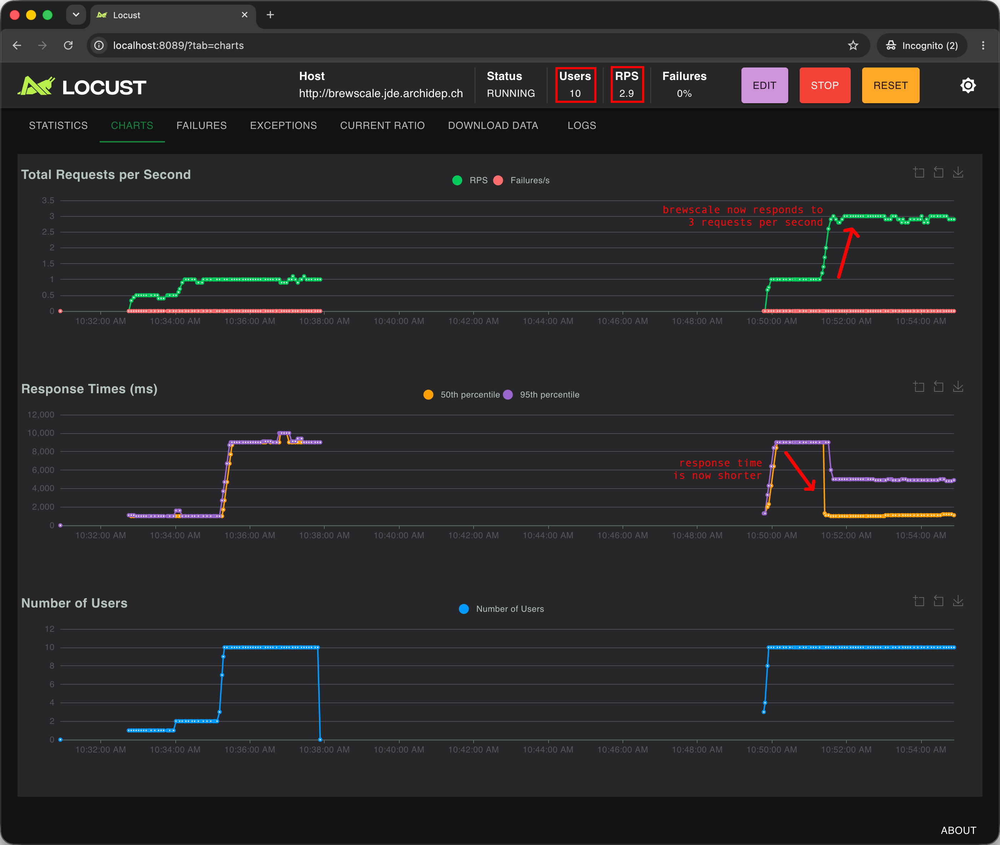
Why do some customers still wait several seconds? When you added the baristas, barista 1 still had a queue of customers who had ordered before. nginx takes the baristas in turn, without looking at how many customers each one has waiting, so each barista receives about as many orders as it brews, and barista 1 catches up with its queue slowly, if at all. Its customers wait several seconds, while those of baristas 2 and 3 are served in about a second.
Visit your café and reload the page a few times. The colour and the number of the barista change: nginx sends the requests it receives to each barista in turn. Do not expect barista 1, 2, then 3, though: the load test is still running, and the orders of Locust’s customers come between your requests.
Each reload still takes a moment, as your request waits in a barista’s queue like any order. But the queues are much shorter now: about a second, unless you end up in the queue of barista 1.
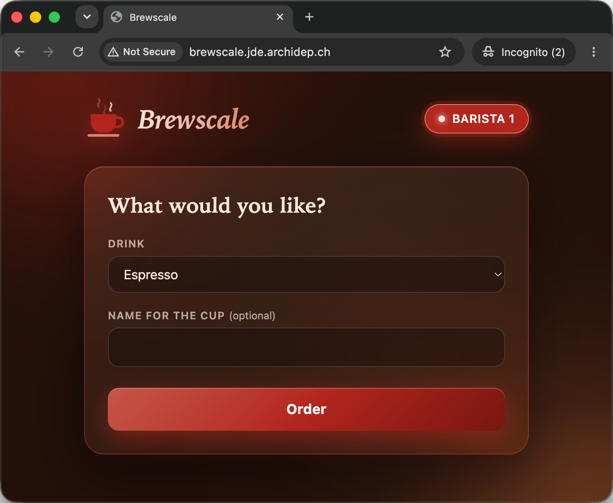
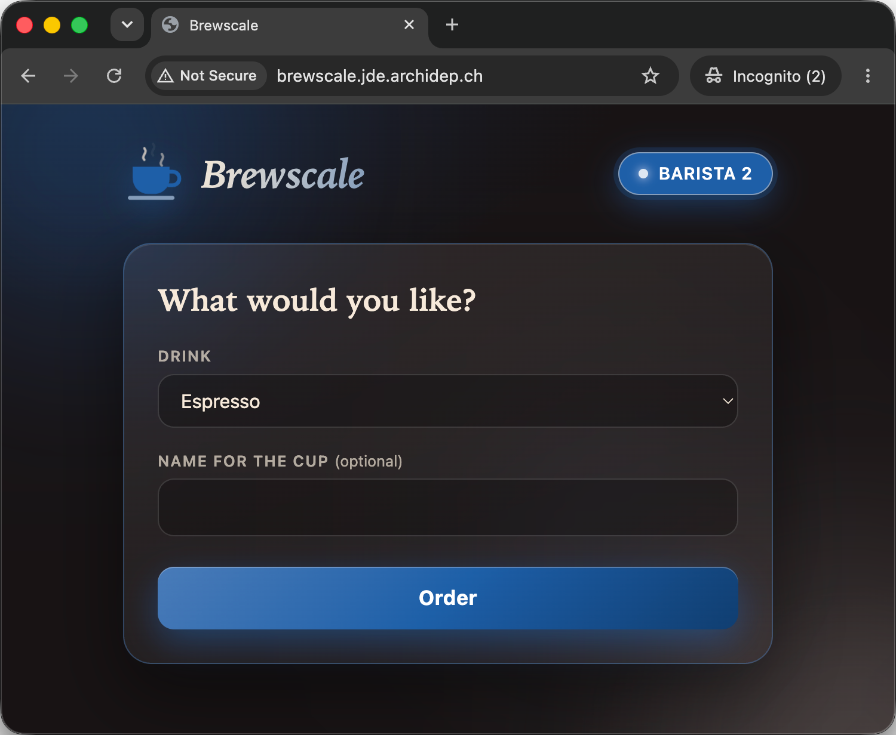
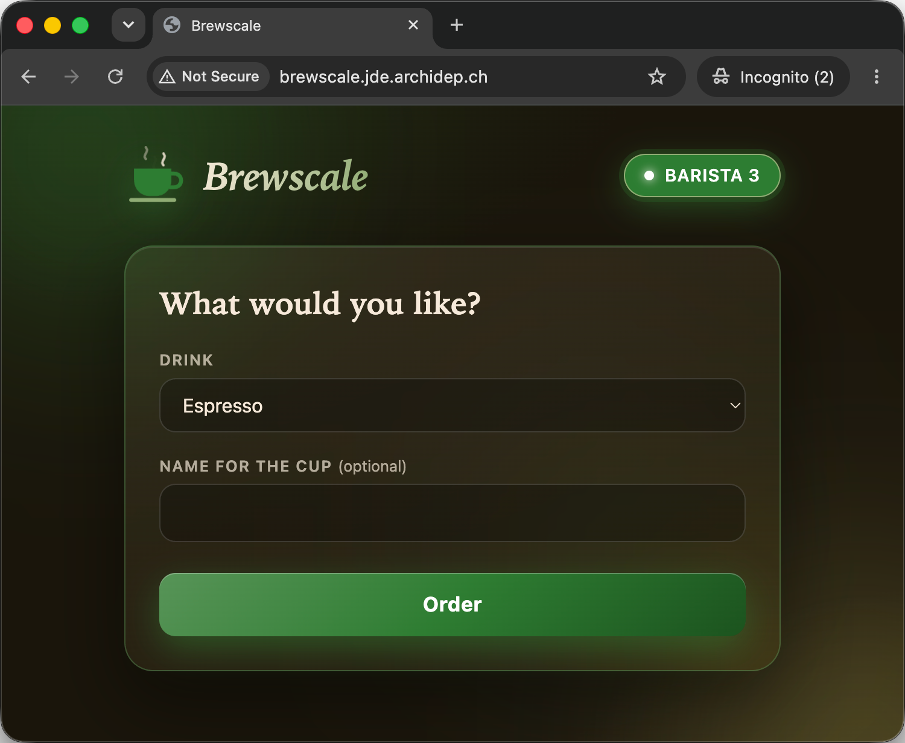
While the test runs, order a coffee yourself again. You should wait much less than before:
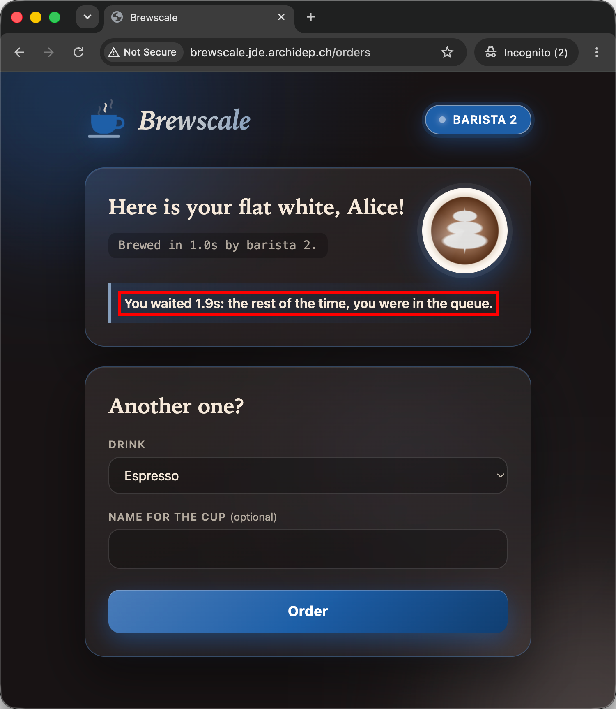
Three baristas brew three coffees at the same time, so the queue moves three times faster. Eight customers in front of you are only two brews ahead of you:
customer 1 --1s--
customer 2 --1s--
customer 3 --1s--
customer 4 --1s--
customer 5 --1s--
customer 6 --1s--
customer 7 --1s--
customer 8 --1s--
you --1s--
------------------ 3sYou probably waited even less, unless nginx sent you to barista 1 and its queue. Each Locust customer is now served faster, so more of them are pausing between two orders at any time, and fewer are queueing in front of you.
You may now stop the load test.
Not the solution to all your problems
This exercise shows how to balance the load among several instances of an application with nginx. But horizontal scaling does not solve every performance problem, especially on a single server.
Running more instances of an application on the same server can even make the problem worse, depending on its cause!
Three of the main causes of performance problems are using too much CPU, not having enough memory, and performing too much I/O (input/output, such as reading and writing files). In a café, think of the grinder, the space behind the counter, and the stockroom. Whether horizontal scaling helps depends on the cause, and on many other factors:
-
If your application is slow because it uses too much CPU (for example, it makes many complex calculations), running more instances may not make it faster, and may even make it slower once your server’s processor cores are overloaded.
Imagine that every drink had to be ground by hand, on the café’s only grinder: a CPU-bound task, on a single processor core. Hiring more baristas would not make the queue move any faster. They would only queue at the grinder instead of at the counter. It depends on the following factors:
-
Does your server have only one CPU core?
If you run a CPU-bound application on a machine with one CPU core, running more instances of the application only makes it faster as long as there is CPU capacity to spare.
Once CPU usage reaches 100%, running more instances is unlikely to make it faster, because one core cannot do several things in parallel. It can run several processes or threads concurrently, taking turns, but that does not let it do more work in the same time. The application starts getting slower as you add more instances.
-
Does your server have several CPU cores?
-
Is the application single-threaded, serving one request at a time like a barista? This depends on the programming language it is written in, and on how it is written.
In this case, running more instances will probably make it faster, because the cores can run your code in parallel: several grinders. But it depends on how many instances you run, and on the other programs that also use the CPU on your server. At some point, all of the CPU cores will be working at 100% capacity. Running more instances then only makes the application, and the whole server, slower.
-
Is the application already spreading its work across several CPU cores by itself?
In this case, running more instances only makes it faster as long as there is CPU capacity to spare, that is as long as some CPU cores are not at 100%. Once all of them are, more instances only make the application, and the whole server, slower.
-
-
-
If your application is slow because it uses too much memory (for example, it keeps a lot of data in memory), running more instances may make it faster IF your server has memory to spare. Every barista needs some space behind the counter.
If memory usage is already close to 100%, all you achieve by running more instances of your application is to bring down your whole server for lack of memory.
-
If your application is slow because of I/O (for example, it often reads and writes data on disk, or in a database), running more instances will probably make it faster, but only IF the I/O work can be done in parallel, which depends entirely on what kind of work it is.
Imagine that the baristas fetch milk and beans from a stockroom with a narrow door. A few of them can go through at once, but past that, they queue at the door. Files work the same way: they can be read and written in parallel up to a point, but at some point there are too many for your server’s disk to keep up.
Database servers are designed to serve many clients at once, like a supplier who delivers to many baristas, and they make the most of your hardware. But again there is a limit, especially if the database runs on the same server as your application. At some point, running more instances slows everything down.
 Optimizing the application
Optimizing the application
If your application uses too much CPU or memory, or performs too much I/O, you can of course look for the bottlenecks in its code, and optimize them to use fewer resources. It may then be able to process more requests, or respond faster.
This is a programming problem, not directly related to architecture.
 Scaling further
Scaling further
Your computer has limits too. Simulating more users takes more CPU and memory, and at some point a single computer cannot simulate enough of them to load-test a large application. Load testing tools such as Locust can then spread the simulated users across several computers.
Whatever the reason your application is slow, you also have to make sure that it supports running several instances at once before you start more of them: two instances writing the same file, or the same rows of a database, may conflict with each other.
Once you reach the limits of a single server, you can run more servers, and more
instances of your application on them: open a second café. In this exercise,
your nginx upstream only lists 127.0.0.1, your server itself, but nothing
prevents you from listing the IP addresses or domain names of other servers, to
spread the work among them. Of course, your application must then support being
spread across several servers.
If you are very successful and reach tens of thousands of clients at once, nginx itself may become a bottleneck, and you may have to balance the load at the DNS level, among several load balancers.
 Performance is hard!
Performance is hard!
In summary: performance is a very complex problem.
Again, before setting up anything: don’t guess, measure!
And again, beware of rate limiting and (D)DoS protection when you load test. A load test can look a lot like a DoS attack, and your cloud provider may ban you if you are not careful.
 Scaling Brewscale horizontally
Scaling Brewscale horizontally
For your information, Brewscale is very easy to scale horizontally on a single server because:
- Brewing a coffee is a wait, which uses neither CPU nor memory, and performs no
I/O: Brewscale calls Java’s
Thread.sleepmethod, which pauses it for a second. - Each barista serves one request at a time: Brewscale uses the HTTP server that comes with Java, which handles every request on a single thread unless it is told otherwise, and Brewscale never tells it otherwise. That is what makes running several processes clearly faster.
- Each order is independent of the others, and there is no shared resource such as a database. The baristas never need to talk to each other, or to take turns using anything.
Stop Locust
Do this on your computer, not on your server: in the terminal where you started Locust.
You are done with load testing. Stop Locust’s container:
$> docker stop locust
locust--rm made Docker remove the container once it stopped. Your clone of Brewscale
stays on your computer: you can start Locust again with the same docker run
command, from its directory.
What have I done?
You have deployed an application that is slow by nature, measured how slow it gets under load with Locust, a load testing tool, and made it serve more customers by running several instances of it, with nginx balancing the load among them.
Brewscale had to be built before it could run: Maven compiled its Java code and packaged it into a jar. What you deploy is no longer the code of the repository as it is, but a program built from it. The build happens on the server, as you, and the application runs as a user of its own, which only needs to read the result.
Under load, the time a request takes is not the time the application needs to handle it. A barista brews a coffee in a second, but a customer who finds nine others in front of them waits ten. One process serves one request at a time, and the requests that arrive in the meantime wait in a queue. Load testing measures what the customers experience, queue included.
Adding customers did not add orders served per second: one barista brews about one coffee per second, however many customers wait. The extra customers only made the queue longer.
Horizontal scaling runs more instances of the same application, each one a process of its own, here three. Each instance needs a port of its own, since only one process can listen on a port. The three baristas serve three customers at the same time, and the queue moves three times faster.
systemd can start several instances of the same application for you, each with its own arguments and environment. It can start a group of them at once, and stop or restart them together. The baristas are now a group, the café, which starts when the server boots, and stops when it shuts down.
nginx, which you used as a reverse proxy, is now also a load balancer: its upstream lists the addresses of the baristas, and it forwards each request to one of them, in turn. A browser still sees a single café, at a single address.
It worked on a single server because the baristas mostly wait, and waiting uses no CPU: the processor runs another barista in the meantime. An application that is slow because it computes, or because its disk is busy, would not be helped as much, and might even be slowed down: horizontal scaling only helps when there is something to spare.
Architecture
This is a simplified architecture of the main running processes and communication flow at the end of this exercise. Unlike in the previous exercise, nginx does not forward every request to the same process: it balances them among the three baristas. Step through the diagram to follow the exercise: one barista serving your order, then the orders of Locust’s customers one at a time, then three baristas serving your page in turn, and Locust’s orders at the same time.
In this diagram, three baristas of Brewscale, three processes running the same jar, listen on ports 4201 to 4203. nginx listens on port 80, and balances the orders of the café among them. systemd, the init process, started all of them when the server booted.
systemd, the init process, started nginx when the server booted. nginx listens on port 80. Your wildcard DNS record, *.jde, points brewscale.jde.archidep2.ch to your server’s public IP address.
You start the Brewscale service: systemd starts one barista, as the brewscale user. The barista listens on port 4200.
Someone opens a browser on their computer.
They type the café’s address into the browser. The browser looks up brewscale.jde.archidep2.ch in the DNS, which answers with your server’s public IP address.
The browser connects to port 80, the default port of HTTP, at your server’s public IP address, where nginx listens.
The browser sends an order for a flat white over the connection, and waits for the answer.
nginx works: the configuration of brewscale.jde.archidep2.ch proxies the request to http://127.0.0.1:4200, where the barista listens.
nginx connects to the barista on port 4200, at 127.0.0.1, the server’s own loopback address.
nginx sends the order on to the barista, and waits for the answer.
The barista brews the flat white: it waits for a second, without using the CPU, as an application waits for a database or another service.
The barista works, building the page that hands over the flat white.
The page travels back to nginx, over the connection nginx opened.
nginx sends the page on to the browser. The flat white took about a second.
You run Locust in a container on your computer, and start a load test with three customers in its web interface.
Each customer of Locust connects to the café by its name, as any customer would: to port 80 at your server’s public IP address, where nginx listens.
The three customers send their orders at the same time, each over its own connection, and wait for the answers.
nginx sends the first order on to the barista.
The barista brews the first order, for a second. It serves one customer at a time: the other two orders wait in the queue.
The page of the first order travels back to nginx.
nginx sends the page on to the first customer, and the second order on to the barista.
The barista brews the second order. The third still waits in the queue.
The page of the second order travels back to nginx.
nginx sends the page on to the second customer, and the third order on to the barista.
The barista brews the third order, whose customer has already waited two seconds.
The page of the third order travels back to nginx.
nginx sends the page on to the third customer, who waited three seconds for a coffee that took one second to brew.
You stop the Brewscale service: the barista exits.
You start brewscale.target: systemd starts three baristas from the template brewscale@.service, each with its own number, and listening on port 420 followed by that number.
You reload the café’s page in the browser. The browser asks nginx for the order form, over the same connection.
nginx now proxies the café’s requests to its upstream, which lists the three baristas, and takes them in turn. It is the turn of barista 1: nginx connects to it on port 4201, and forwards the request.
Barista 1 builds the order form at once, with nothing to brew, and sends it back to nginx.
nginx sends the page on to the browser, which shows the café in the colour of barista 1.
You reload the page once more.
It is the turn of barista 2: nginx connects to it on port 4202, and forwards the request.
Barista 2 builds the order form at once, with nothing to brew, and sends it back to nginx.
nginx sends the page on to the browser, which shows the café in the colour of barista 2.
You reload the page once more.
It is the turn of barista 3: nginx connects to it on port 4203, and forwards the request.
Barista 3 builds the order form at once, with nothing to brew, and sends it back to nginx.
nginx sends the page on to the browser, which shows the café in the colour of barista 3.
The three customers of Locust send their orders at the same time again.
nginx gives one order to each barista, in turn: barista 1, barista 2, then barista 3.
The three baristas brew at the same time, each waiting for a second. Waiting uses no CPU, so the processor is free for all three.
The three pages travel back to nginx: three orders served in about the time one barista takes for one.
nginx sends the pages on to the three customers, who each waited about a second.
Note
Note that this diagram simplifies nginx by showing only one process, while in reality it has a master process and several worker processes, but this is sufficient to understand the architecture.
 Where is everything?
Where is everything?
These are the files and directories of your server that matter for this deployment.
| Path | What it is | What you did | Who uses it |
|---|---|---|---|
/srv/brewscale new |
Your deployment: a clone of Brewscale’s repository | Created it with sudo mkdir, cloned the repository into it, and gave it to the brewscale group |
You, to build. The brewscale user reads it |
/srv/brewscale/target/brewscale.jar new |
The program: Brewscale’s compiled code, with the libraries it uses | Built it with mvn package |
java, run by systemd as the brewscale user, once for each barista |
/etc/systemd/system/brewscale@.service new |
The unit template: how to run one barista, %i being its number |
Wrote it as brewscale.service, then renamed it with sudo mv and turned it into a template |
systemd, for each barista |
/etc/systemd/system/brewscale.target new |
The café: the group of the baristas, which says how many there are | Wrote it with sudo nano, and enabled it |
systemd, to start the baristas when the server boots |
/etc/nginx/sites-available/brewscale new |
The configuration of the café: its name, and the upstream of the baristas | Wrote it with sudo nano, enabled it with a link in sites-enabled, and added an upstream |
nginx, to balance the café’s requests among the baristas |
/etc/passwd changed |
The list of the server’s Unix users | Ran useradd, which added the brewscale user |
systemd, to find the brewscale user that runs the baristas |
/usr/bin/java new |
The Java virtual machine, which runs the jar | Installed it with apt install |
systemd runs it, as ExecStart says |
You can explore all of this yourself: ls -l shows what a directory contains,
with its permissions, and cat, head and tail what a file contains, as in
the command line cheatsheet. Use sudo for what only
root can read. For example:
# The units systemd has loaded for Brewscale.
$> systemctl list-units 'brewscale*'
# What a barista logs: the orders it brews, as they come.
$> sudo journalctl -u brewscale@2 -f Troubleshooting
Here’s a few tips about some problems you may encounter during this exercise.
[emerg] could not build server_names_hash, you should increase server_names_hash_bucket_size
Your domain name is too long for nginx’s default settings. Fix it as in the same problem in the static site exercise.
WARNING: A terminally deprecated method in sun.misc.Unsafe has been called
mvn package prints these lines when it starts:
WARNING: A terminally deprecated method in sun.misc.Unsafe has been called
WARNING: sun.misc.Unsafe::objectFieldOffset has been called by com.google.common.util.concurrent.AbstractFuture$UnsafeAtomicHelper (file:/usr/share/maven/lib/guava.jar)
WARNING: Please consider reporting this to the maintainers of class com.google.common.util.concurrent.AbstractFuture$UnsafeAtomicHelper
WARNING: sun.misc.Unsafe::objectFieldOffset will be removed in a future releaseYou can ignore them. They come from Maven itself, not from Brewscale: a library
that Maven uses (/usr/share/maven/lib/guava.jar) calls a method of Java that a
later version will remove, and Java 25 warns about it. Nothing is wrong with your
build as long as it ends with BUILD SUCCESS.
Unable to access jarfile target/brewscale.jar
The logs of a barista show this error, and it does not start:
$> sudo journalctl -u brewscale@1
...
Nov 19 10:31:13 jde.archidep.ch java[10601]: Error: Unable to access jarfile target/brewscale.jarThere is no jar in /srv/brewscale/target: check with ls -l /srv/brewscale/target. Build it with mvn package in /srv/brewscale, as in
Build the application, and make sure the build ends with BUILD SUCCESS. Then restart the target with sudo systemctl restart brewscale.target.
The command 'docker' could not be found in this WSL 2 distro
Docker Desktop provides the docker command in the WSL only while it is
running, and only in the WSL distributions it is integrated with. Start Docker
Desktop, then open a new terminal. If the command is still missing, enable the
WSL integration as shown in Run Locust with Docker Desktop.
Cannot connect to the Docker daemon
Docker Desktop is not running. Start it, wait until it says that it is running, and run your command again.
A barista does not start
See the troubleshooting of the systemd exercise: its
errors are the same for a barista, with brewscale@1 instead of guessit in
the commands.
502 Bad Gateway
nginx received the request, but could not get an answer from a barista. Look at the end of nginx’s error log:
$> sudo tail /var/log/nginx/error.logIf it says connect() failed (111: Connection refused) while connecting to upstream, nothing listens at the address of one of your upstream’s servers, or
of your proxy_pass directive:
- Check that each barista is running with
sudo systemctl status brewscale@1(and@2,@3), and that the last line of its logs says it is listening on the port you expect. - Check that the ports of your
upstreamblock are4201,4202and4203, one per barista you have started.
The café always shows the same barista
nginx only sends requests to the servers of its upstream. Check that:
- Your
upstreamblock lists the three baristas, and you have reloaded nginx’s configuration since you changed it. - The three baristas are running:
sudo systemctl status brewscale.target, and each barista’s status.